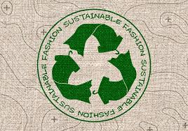
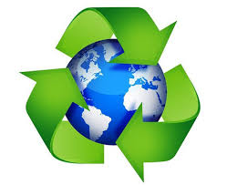

Podemos decir que este es el principio fundamental... se han generado daños considerables como:
Podemos decir que este es el principio fundamental... se han generado daños considerables como:

Los principios del desarrollo sustentable nos guían en este camino hacia un futuro más próspero y armonioso.
1. Respeto por el medio ambiente y la biodiversidad
Podemos decir que este es el principio fundamental... se han generado daños considerables como:

Para definir este principio es necesario reconocer que el ser humano ha tenido por costumbre... una idea equivocada acerca de la disponibilidad de los recursos.